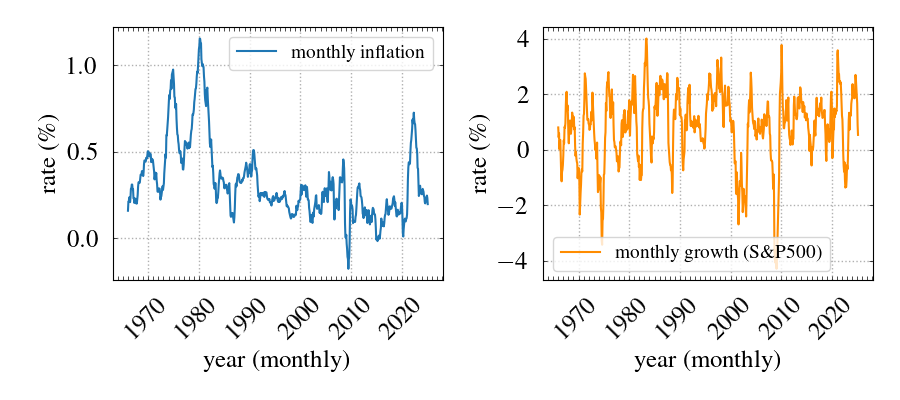

Retirement is often called the golden years, but whether they’ll be golden or just be there depends on how much you save regularly and for how long. In this post, I want to write down a retirement savings calculation based on a specific set of assumptions, starting with the premise that both earnings and retirement take place in the U.S.
Let’s list the key ingredients of the calculation:
-
Family Status
To ensure that, in retirement, we rely on others as little as possible, this calculation will focus on single individuals.
-
Net Retirement Income
Unlike most online retirement calculations, I’ll use net income (after taxes) because it’s more realistic and reflects the amount you can actually spend. Personally, I prefer income figures that represent take-home pay.
For a realistic number, consider that in retirement, ideally, you won’t need to work and can choose to live in a lower cost-of-living (COL) area. According to the U.S. Census Bureau (Guzman and Kollar, 2023), the median post-tax income for individuals aged 65 and older was 49,510 (USD) in 2022 and 51,400 in 2023. For simplicity, let’s assume a target of $50,000. The numbers cited are in (approximately) today’s dollars, which is why we’ll need to adjust them for inflation (see below).
-
Where to Keep the Retirement Savings?
In the U.S., there are specialized retirement accounts like 401(k), IRA, and Roth IRA. Although they offer tax advantages, they also come with limitations. For example, these accounts have annual contribution limits (especially low for IRAs) and penalties for early withdrawals (typically before age 59½).
To keep things flexible, I’ll assume savings are held in a brokerage account, with investments tied to the S&P 500 index. Regarding tax implications, we’ll pay taxes on capital gains (the "profit" we earn from investing). In 2025, the tax brackets for those filing as single are as follows (note: these amounts are are to be adjusted for inflation):
- 0% for 0–48,350 USD,
- 15% for 48,351–533,400 USD,
- 20% for 533,401 and above.
In principle, it’s also possible to account for the standard deduction ($15,000 for single filers in 2025), but since I’m not certain if it applies in this specific retirement scenario, I’ll assume no additional deductions. This will provide a more conservative estimate of retirement savings. Also, note that the upper end of the first bracket is very close to our assumed net retirement income of $50,000. If we can keep our income within the 0% bracket, our gross and net income would be the same, as there would be no taxes on capital gains. I plan to look at the potential benefits of reducing our net income to $48,350 to stay within the 0% tax bracket in a follow-up post.
-
Inflation
The numbers for retirement income and tax brackets we’re assuming are in today’s dollars. A specific number is, in fact, a proxy for the level of financial freedom we’d like to have. This means we’ll need to adjust these numbers for inflation. We’ll assume that both income and tax brackets are adjusted at the same rate of inflation.
-
Duration of Retirement.
We'll assume the canonical 4% rule, meaning we'll plan to withdraw 4% of our retirement savings each year. With this approach, our savings will last approximately 25 years, although the actual duration may be somewhat longer if the savings continue to grow in the brokerage account.
Simple Estimates
Let us first estimate the required savings assuming average rates of inflation and growth. For inflation, we'll use Consumer Price Index (CPI) data from the U.S. Bureau of Labor Statistics. This is monthly data for all urban consumers (CPI-U) and all items. For the S&P500, we'll use a table that tracks the growth of 100 USD invested in 1965, as quoted by the Official Data Foundation.
Figure 1 shows the monthly inflation (left) and growth (right) rates averaged backward in time. The averaging is performed by considering the growth over the previous \(N\) months (starting today) and assuming that the value changed by \((1+r/100)^N\), where \(r (\%)\) is the average monthly rate. The wild fluctuations of the S&P500 rate in the recent months emphasize the importance of long-term investments spanning multiple years. These graphs also show that, on a timescale longer than \(\approx 10\) years, the S&P500 grows at \(\approx 1\%/\mbox{mo}\), compensating for the inflation, which occurs at \(\approx 0.3\%/\mbox{mo}\).

Figure 1: Average monthly rates of inflation (left) and S&P500 growth (right).
With a monthly inflation rate of \(0.3\%\), in twenty years, today's 50,000 will turn into \(50000\times (1+0.003)^{20\times 12}\approx 102600\) USD. Using the 4\% rule, we'll need \(S=25\times 102600\approx 2,500,000\) (two and a half million dollars!) of retirement savings. Investing in the S&P500 that grows at 1\% per month, we'll have to save
$$
x = \frac{S}{1+q}\frac{q}{(1+q)^N - 1},
$$
where \(q\) is the growth rate, and \(N\) is the number of contributions. Substituting \(q\approx 0.01\) and \(N=12\times 20=240\), we get \(x\approx 2,560\) USD. This is the amount we'll need to save monthly if we want to enjoy 50,000 USD every year in 20 years. So far, we haven't taken taxes into account. To estimate what part of the adjusted monthly amount \(102,600\) is taxable, we can assume that capital gains are uniformly distributed between our S&P500 shares. The capital gains
$$
g = S - Nx \approx 1,950,000,
$$
which constitutes \(\approx 75\%\) of our savings. If we find ourselves in the 15\% tax bracket, our effective tax rate will be \(0.75\times 0.15\times 100\%\approx 11\%\), which means we'll need to withdraw \(102,600/0.89\approx 115,300\) USD if we want the net income \(102,600\). Our savings should still last about 25 years, because we'll keep them invested in the S&P500, and hopefully the growth will make up for the taxes.
To summarize, under the simple assumptions above, saving around \(2,500–3,000\) USD per month for 20 years in an S&P500-indexed brokerage account should be enough to support a $50,000-per-year (in today's dollars) retirement income for about 25 years. In a future post, I'll revisit this estimate to account for the volatility of inflation and S&P500 returns, and explore whether staying within the 0% capital-gains bracket would meaningfully change the required contribution.